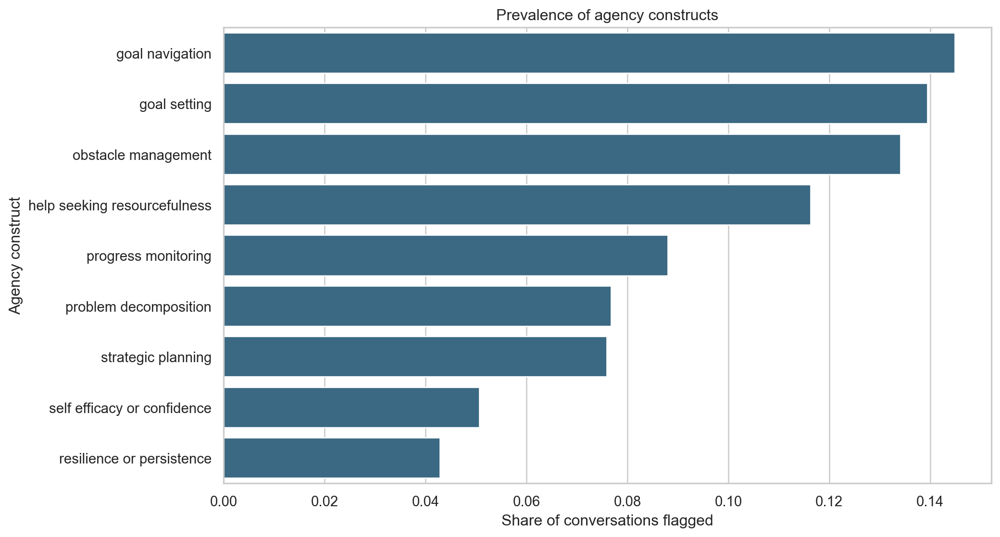
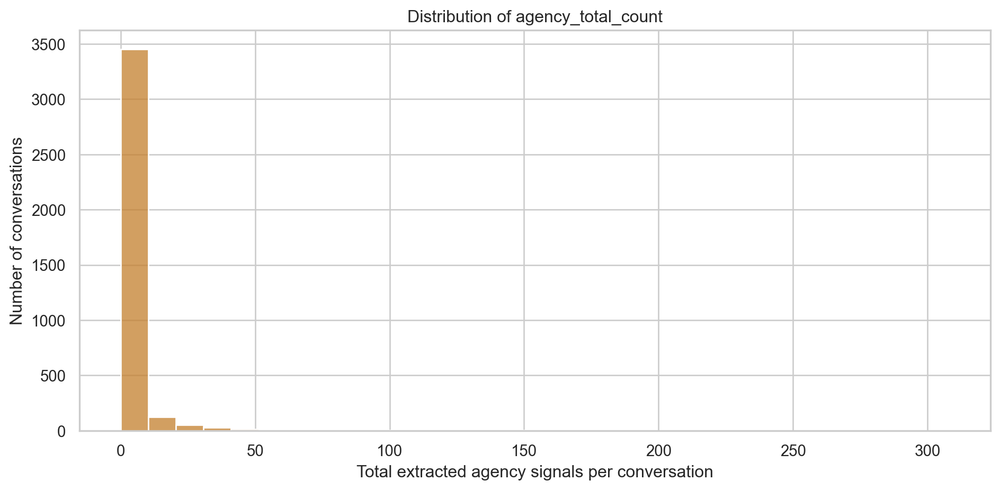
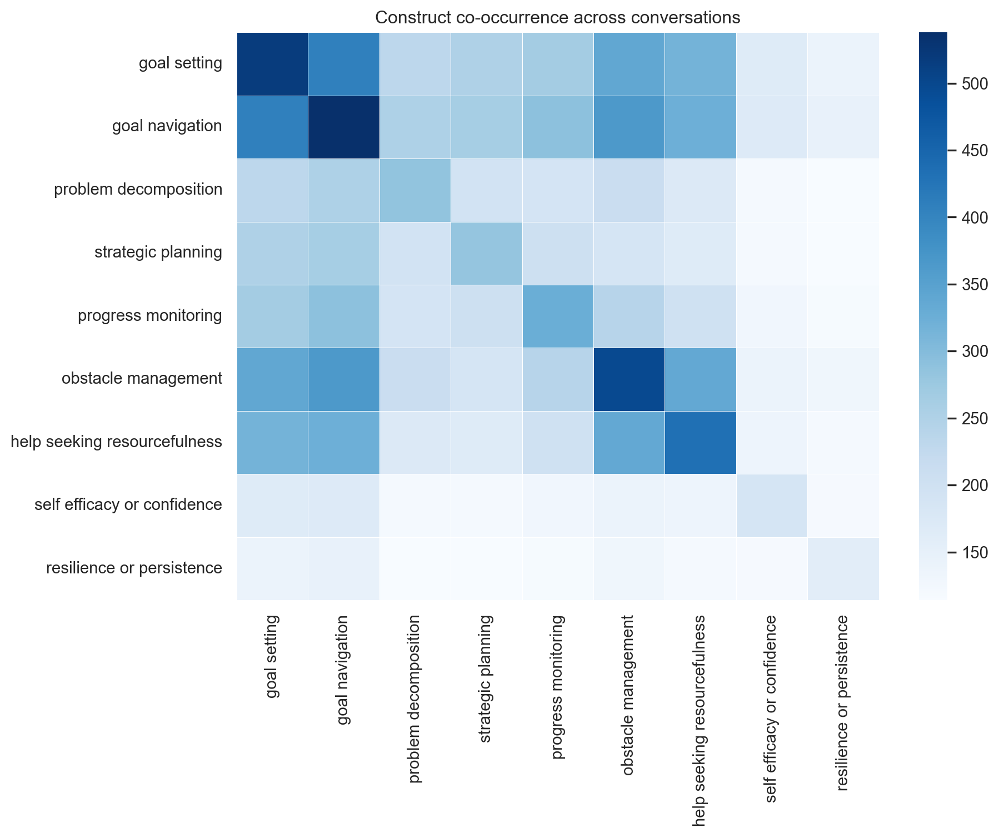
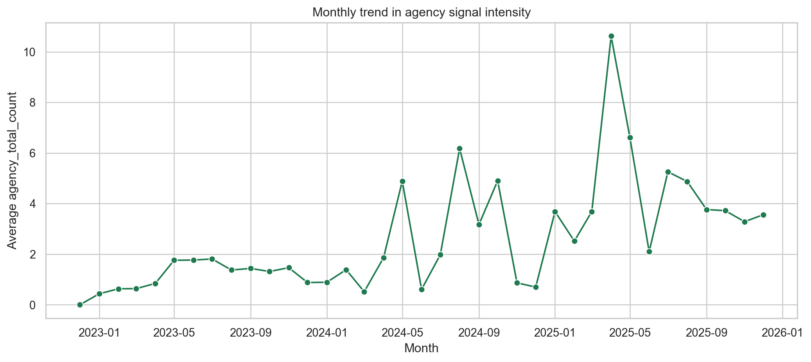
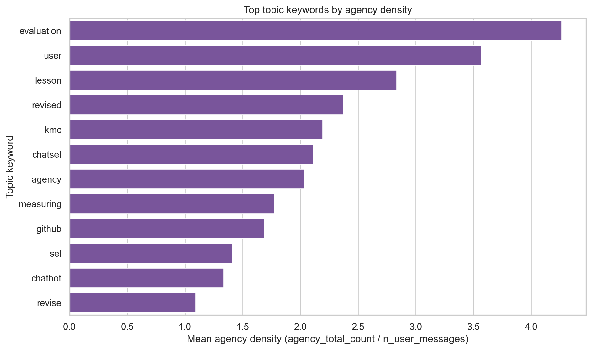

{'n_conversations': 3714,
'candidate_share': 0.23694130317716747,
'mean_agency_total_count': 3.1402800215401183,
'median_agency_total_count': 0.0}Everyday Agency Signals In Human-AI Conversations
Data and preprocessing
This report summarizes conversation-level agency coding from user-authored messages in data/chat_messages.parquet.
Pipeline steps:
- Keep
author_role == "user"with non-empty text. - Aggregate to one row per
conversation_id. - Apply two-stage candidate filtering (
title_score,text_cue_score). - Run LangExtract coding for agency constructs.
- Build binary + count features per construct.
Candidate filtering diagnostics
| title_score | text_cue_score | n_user_chars | |||||||
|---|---|---|---|---|---|---|---|---|---|
| count | mean | median | count | mean | median | count | mean | median | |
| is_candidate | |||||||||
| False | 2834 | 0.078687 | 0.0 | 2834 | 0.327100 | 0.0 | 2834 | 917.379675 | 358.0 |
| True | 880 | 0.195455 | 0.0 | 880 | 3.027273 | 3.0 | 880 | 13468.172727 | 5210.0 |
LangExtract coding setup
Constructs coded:
['goal navigation',
'goal setting',
'obstacle management',
'help seeking resourcefulness',
'progress monitoring',
'problem decomposition',
'strategic planning',
'self efficacy or confidence',
'resilience or persistence']Few-shot examples were created from a small sample of real user conversation snippets with redaction applied to emails, URLs, phones, and long IDs.
Main results
Construct prevalence

Distribution of agency counts per conversation

Construct co-occurrence heatmap

Time trend: monthly average agency counts

Top conversation topics by agency density

Redacted evidence examples
| conversation_title | is_candidate | heuristic_constructs | snippet_redacted | |
|---|---|---|---|---|
| 0 | Businesses Struggle Post-Lockdown | True | help_seeking_resourcefulness,obstacle_manageme... | Is this mentioned in the paper? --- Many busin... |
| 1 | Interactive Brain Game | True | help_seeking_resourcefulness,problem_decomposi... | based on the activities that I give you, could... |
| 2 | Feedback Improvement Suggestions: Emergency Co... | True | help_seeking_resourcefulness,obstacle_management | rewrite the findings: good feedbacks on introd... |
| 3 | BERT and clustering comparison | True | goal_navigation,progress_monitoring | what is bert relationship to hiererchical clus... |
| 4 | Stacked Bar Plot Python. | True | goal_setting,help_seeking_resourcefulness | I want to draw a stacked bar plot with two dat... |
| 5 | Table Update Confirmation Needed | True | goal_setting,progress_monitoring | rewrite: Hi Josh, I am working on the progress... |
| 6 | Clean & Organize RIS Data | True | help_seeking_resourcefulness,obstacle_management | I have an ris file that has multiple entries l... |
| 7 | Stop if No Rows | True | goal_setting,obstacle_management | I want to stop the function and print an error... |
| 8 | New chat | True | help_seeking_resourcefulness | how do I install package from a local tar.gz f... |
| 9 | Leadership theories and styles | True | help_seeking_resourcefulness | Lesson 2 Overview Dwight D. Eisenhower (left) ... |
| 10 | Social Science AI Questions | True | progress_monitoring | based on the following questions, could you fi... |
| 11 | Case study ideas ChatSEL | True | goal_setting | based on what's written in phase 3, I wan... |
Limitations
- This analysis codes only user-authored messages and ignores assistant/tool text.
- Candidate filtering is heuristic and may exclude some subtle agency expressions.
- Few-shot labels are bootstrapped with weak heuristics and should be iteratively refined.
- Binary and count features are useful for trend analysis but do not capture full nuance of agency expression.